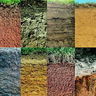

20.06.2016Характеристика грунтов и геологические изысканияОт правильности определения характеристик грунта, его состава, зависит конструкция фундамента и прочность всего строения.20.06.2016Характеристика грунтов и геологические изысканияОт правильности определения характеристик грунта, его состава, зависит конструкция фундамента и прочность всего строения.20.06.2016Характеристика грунтов и геологические изысканияОт правильности определения характеристик грунта, его состава, зависит конструкция фундамента и прочность всего строения.20.06.2016Характеристика грунтов и геологические изысканияОт правильности определения характеристик грунта, его состава, зависит конструкция фундамента и прочность всего строения.20.06.2016Характеристика грунтов и геологические изысканияОт правильности определения характеристик грунта, его состава, зависит конструкция фундамента и прочность всего строения.20.06.2016Характеристика грунтов и геологические изысканияОт правильности определения характеристик грунта, его состава, зависит конструкция фундамента и прочность всего строения.20.06.2016Характеристика грунтов и геологические изысканияОт правильности определения характеристик грунта, его состава, зависит конструкция фундамента и прочность всего строения.20.06.2016Характеристика грунтов и геологические изысканияОт правильности определения характеристик грунта, его состава, зависит конструкция фундамента и прочность всего строения.20.06.2016Характеристика грунтов и геологические изысканияОт правильности определения характеристик грунта, его состава, зависит конструкция фундамента и прочность всего строения.20.06.2016Характеристика грунтов и геологические изысканияОт правильности определения характеристик грунта, его состава, зависит конструкция фундамента и прочность всего строения.